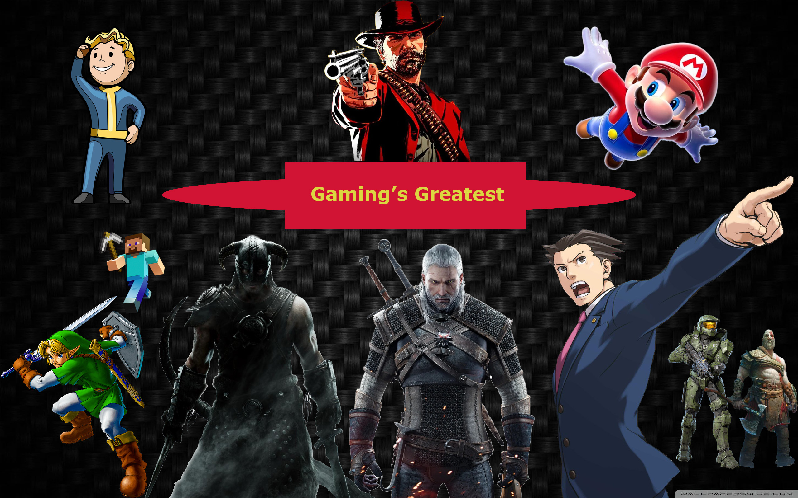
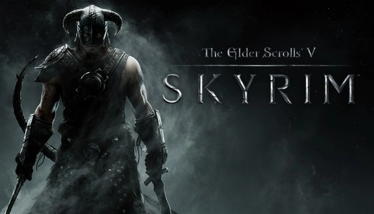

You can change the font
of the header if you would
like here:
This is just a list of my opinions and my experiences
I've had playing these games and are in no
way representative of any objective overview of these
titles. I fully respect and encourage others to have
their own opinions regarding this subject as the same
with just about anything else.

Image created by Soren Easterwood
10.
Super Mario Galaxy
Back in the days of the Wii I practically begged my parents to
buy me a copy of Super Mario Galaxy 2 as it looked like the
coolest game ever at the time and for much of my life it was.
Although I did not grow up with its previous title being the
original Super Mario Galaxy, I still respect is as the Superior
entry as the 2nd game copies almost everything from the original.
Super Mario Galaxy I would consider to be the best Mario game in
the entire seris due to its amazing gameplay, level design, killer
sound track, and above all else its absolute unique awe-inspiring
aura and ability to delight the player.
8.
Minecraft
I like many others in my generation practically grew up watching
various minecraft let's plays on Youtube from Youtubers such as
DanTDM, PrestonPlays, and PopularMMO's just to name a few. It was
and is a game with endless creativity and possiblities. Just about
any structure you can imagine can be replicated in Minecraft. The
plethera of mod support for the game can make the game very
interesting and fun with new possiblities. Although I may sound
cheesy saying this it doesn't make it any less true.
6.
Fallout: New Vegas
Fallout 3 was one of my very first experiences with an open-world
game and Fallout:New Vegas is by far the best in the seris. This
game unlike other entries in the seris has a very large amount of
side-quests and opertunities the player can indulge in. The setting
being in a post-apocalyptic Las Vegas, works well with the franchises
aesthetic. The game, like other Bethesda titles always does well with
encouraging the player to explore the map offering many many hours of
fun ahead of the player.
4.
The Witcher 3: Wild Hunt
For what I can say about the Witcher 3 is that everything this game
sets out to accomplish, it executes upon quite masterfully. The Witcher
3: The Wild Hunt is another open world title set in a fantasy setting
where you play as a Witcher (A genertically enhanced monster hunter)
as you search around the world trying to find your adopted daughter
Ciri while evading the Wild Hunt. The game features terrific combat,
and engaging story, great graphics, wonderful world building, and
diversive and unique monsters to challenge the player.
9.
Halo 2
Halo 2 was the very first M rated Game I have ever played and It
still stands as my favorite FPS. Releasing on the original Xbox
back in 2004, the game is an upgrade from Halo Combate Evolved
in almost every conceivable catagory. The gameplay has aged well,
the world building spectacular, the characters great, and the level
designs iconic. Not to mention the games impact on the industry by
introducing online multiplayer to many leading to one of the biggest
genres in gaming today.
7.
The Legend of Zelda: Ocarina of Time
Ocarina of Time I would consider to be the best Zelda game ever
released as subjective of a take it is but I have reason. The game
is most famous for its seemless transition from the traditional
overhead 2d gameplay like in previous entries to a new camera angle
behind Link which has become the standard for many different 3D
games to this day. The sound track in this game is perhapes one of
if not the most iconic in all of gaming and the graphics/artstyle
of the game aging like wine in my opinion considering the game's age.
I think above all else however it is the de facto Zelda game for many
people. While other entries while fantastic like Breath of the Wild
have made their own footing and are received with immense praise,
more often than not do people draw a compairison to how it stacks up
against Ocarina as I would describe it as the literal perfect Zelda
game as it gets everything right when it comes to its execution.
5.
The Elder Scrolls 5: Skyrim

It was a tough pick for me but I do have to put Skyrim here on list
over Oblivion as I have come to the conclusion that I just like this
game better. Skryim has had a terrific impact on the industry for its
incorperation of an open-world with seemingly endless supply of side-quests
and objectives for the player to embark on. Even though the game suffers
from many bugs and glitches that still persit to this very day unresolved,
it has never deterred from my enjoyment of it. The shere replayablity of
the game is fantastic as I may play the game as this class and go do this
thing or I play the game again and play as this class and go do this other
thing and then some. The games shere ability to create new experiences on
brand new playthroughs purly based on its shere size has made the game
its reputation. Not to mention having one of the largest modding communities
for the game adding many many more possiblities and fun to be had with it.
3.
Phoenix Wright: Ace Attorney Trilogy
Although I may not be the biggest when it comes to anime as I known well
enough that others are obsessed with any and all things anime and I try
my best to seperate myself from those rather passionate people, I cannot
deney my love for the Ace Attorney Trilogy. Originally released by Capcom
for the GBA in Japan to be later brought over to the west on the Nintendo
DS in the 2000s, the game has you role play as a defense attorney who is
tasked with helping various clients who are falsely accused of a crime
(usually murder) by gathing and collecting evidence, talking to witnesses,
and presenting your case in court. While this may seem basic to some, it
has left an immense impression on me through its shere ability to intimiate
the player through its bone-chilling tension very expertly highlighted
through its brillant sound-track. The situations the player will find
themselves in will have them sitting on the edge of their seat as the
events unfold and the truth revealed.
2.
God of War (2018) + Ragnorok
God of War (2018) is one of my favorite games through its purly brilliant
story and world building. The game has the player play as Kratos, a Greek
god that has relocated himself in a norse setting as him and his son Atreus
embark on a journey to fulfill Kratos's wife's wish of having her ashes
sacred atop the tallest peak in all the 9 realms. This game is a soft reboot
from the original trillogy and its spinoffs now taking place in an entirly
new setting with new gods and characters than before with new over the
shoulder gameplay. The game also features excellent and creative
cinimatography having the entire game all done in one shot and never cutting
away allowing the player to keep in constant pace with the action and events.
The voice acting is top tier as well with actors such as Christopher Judge as
Kratos and Sunny Suljic playing Atreus who work all very well off of each other.
All in all between the setting, characters, and story, this game has earned its
spot as one of my most favorite off all time. Much the same can be said
about its sequel God of War Ragnorok as well.
1.
Red Dead Redemption 2
There is no game that I care for more than Rockstar's 2018 masterpeice, Red
Dead Redemption 2. I cannot describe in words how much this games execution
is surpassed by nothing. Taking place in 1899 at the turn of the century.
The player plays as Arthur Morgan, a member of a gang under the leadership
of Dutch van der lin as both him and the gang try to run away from the law
in a fictional western american landscape as industrial advancements hinder
the gang's ability to live a free life away from civilization and government.
The story in this game is straight up the best I have ever experienced in a
game let alone all other type of media have that be movies and tv shows between
both the plot and the characters that make it up and is ready to make even the
most stable-minded individual begin to tear up with its conclusion. The gameplay
does not disappoint either. The game is perhapes the most realistic game that has
been made to date featuring real world mechanics that many would consider
completely unecessary but combined adds to an immersive effect not attained by
any other game of its kind in my opinion. The map is also very large as well
and chock full of different side quests and opportunities that incentivise the
player to explore to their hearts content. There will never be enough for me to
say about this game so I will end off by saying that if anyone ever a game featuring
an open world with amazing characters, graphics, gameplay, and story, there is none
better than Red dead Redemption 2.